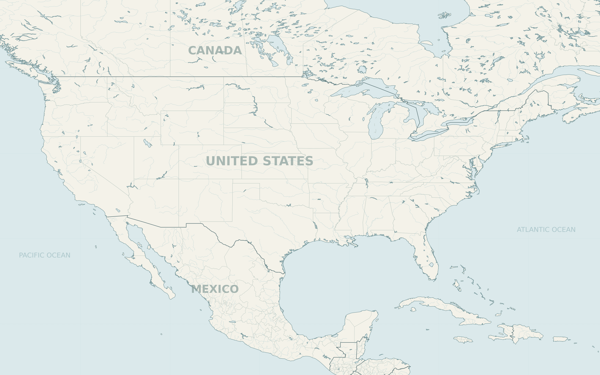
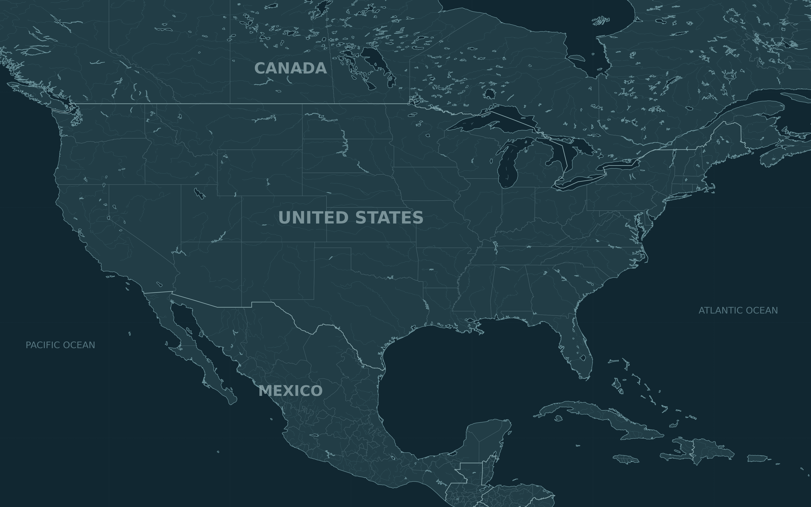

Explore the map


Map takeaway The selected projects extend well beyond the established Virginia and Texas markets.
Geographic basemap · city and county markersSelected entries by stage
Selected entries · tap a segment to filter the map.
Takeaway Canada’s 12 selected entries divide evenly across the three stages.
Capacity disclosure by stage
Selected entries · tap a segment to filter the map.
Takeaway 30 of 52 entries have no usable numeric MW figure.
Live IT capacity by country
Published estimates · hover or tap for details.
Loading country capacity…
Takeaway The U.S. accounts for approximately 94% of reported live IT capacity.
Operational IT capacity only; excludes future projects. Rounded estimates from RaboResearch, March 2026 ↗. Independent of the selected map entries and filters.
U.S. capacity, 2021–2025
Year-end supply · hover or tap for details.
Loading annual supply…
Takeaway Reported primary-market supply reached 9.43 GW in 2025.
Capacity, not facility count. CBRE U.S. primary-market wholesale colocation supply; coverage changes and revisions limit direct comparison. Five completed calendar years; excludes 2026, Canada and Mexico.
North America’s projected capacity
Facility capacity in GW · Rystad Energy’s risk-adjusted outlook · hover or tap for details.
Loading forecast…
Takeaway Rystad projects 112 GW of North American facility capacity by 2029.
Forecasts, not confirmed deliveries. Includes the U.S., Canada and Mexico; traditional, AI/HPC and crypto facilities. Facility capacity differs from the live IT capacity and colocation measures above. “Risk-adjusted” accounts for project delivery risk. Rystad Energy · 2026 report, p. 14 ↗
All mapped entries (52)
| NAME | PLACE | STAGE | CAPACITY / BASIS | Open |
|---|---|---|---|---|
| Loading entries… | ||||